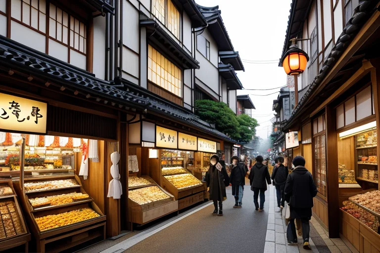

第一章 現実の愛媛
あなたはまだ気づいていない。この土地にも、王がいることを。
松山の商店街は、じゃこ天の揚げる香りと、みかんの甘酸っぱい匂いが混ざり合っていた。観光客の笑い声、店先で交わされる値切りの声、トラックが商品を運ぶ軋む音。金と物が流れる活気は、この「柑商圏」の日常そのものだ。しかし、その喧騒の底には、微かな歪みが潜んでいた。急な取引の破談が生む人間関係の亀裂、過剰な期待が膨らませるバブルの予感、競争が撒く猜疑の種。目には見えないが、確かにこの土地の感情の密度を濃く、時に濁らせていく。
その歪みを、誰よりも敏感に感じ取る者がいた。エヒメリア・リリックは、今治タオルの問屋の二階に佇み、窓の外の活気を叙情の目で見つめていた。彼の傍らでは、小さな光の妖精リリシアが、人々の交わす言葉から立ち上る「言霊波」の乱れを、そっと整えようとしていた。言葉は時に刃となり、歪みを深める。しかし王は知っている。この商いの喧噪そのものが、人を繋ぎ、土地を支える力にもなることを。
第二章 歪みの兆候
しまなみ海道を渡るサイクリストの歓声は、潮風に乗って遠くまで届く。観光客と貨物船が行き交うこの海路は、活気そのもののように見えた。しかし、エヒメリアの耳には、別の音が届いていた。港の倉庫街で交わされる、焦りを帯びた取引の言葉。柑橘の相場を気にする農家の、ため息混じりの独り言。商いの流れが、どこか淀み始めている。それは、目に見える数字の変化よりも先に、言葉の密度と温度の変化として現れる。
「言葉が、少し冷たくなっていますね」と、リリシアが小さな声で言った。彼女の手から放たれる微かな光は、人々が無意識に発する苛立ちや不安の棘を、そっと撫でて丸めようとする。完全には消せない。王の役目は、歪みそのものを消すことではない。その歪みが、ある日突然、取り返しのつかない亀裂として現れる前に、ほんの少し、その進行を遅らせることだ。
エヒメリアは、内子の町並みに残る古い商家を思い浮かべた。あの白壁と漆喰が何世代もの商いの波を、静かに受け止めてきたように。今、この土地に流れる金と言葉の熱に、かすかなひび割れの音が聞こえる。彼は、その音が何を意味するのかを知っていた。救いとは、まだ遠い。
第三章 王の葛藤
松山城の石垣に手を当てると、地中を流れる金の奔流が掌に伝わってくる。新たな商業施設の建設ラッシュ。開発の熱気は、土地の古い歪みを無理やり押し広げようとしていた。エヒメリアは目を閉じた。彼の役割は、この奔流を止めることではなく、その勢いが地盤の脆弱な一点に集中するのを、ほんの少し分散させることだ。リリシアが詠む言霊の波が、契約書の行間や投資家の夢に紛れ、過剰な熱をそっと冷ます。
しかし、時に無力感が襲う。みかん畑が切り拓かれ、代わりに建つのは誰の記憶とも結びつかない建物。彼はそれを悪とは思わない。人の営みは、常に変化の波の中にある。ただ、その変化の速さが、土地が耐えられる歪みの量を、知らぬ間に超えつつある。言葉で警告を発することはできる。だが、欲望の前に、詩の一節はあまりに軽い。救いとは何か。彼は未だ答えられずにいた。
第四章 妖精との対話
下灘駅のホームで、リリシアが海を見つめていた。夕陽が瀬戸内を黄金に染め、波の音だけが規則正しく響く。「王様は、言葉が救いになると、まだ疑っていますね」彼女の声は波音に溶けそうな柔らかさだった。
「商いもまた、言葉です」リリシアは続けた。「今治タオルの商人が『肌触りが良い』と言う。じゃこ天の店主が『今日のは特に揚がっている』と笑う。その一言に、技術への誇りと、買う人への思いが込められている。欲望だけなら、もっと別の言葉を使うでしょう」
彼女は駅のベンチに腰を下ろし、妖精の目で見た「流れ」を語り始めた。しまなみ海道を渡る車の灯りは金の流れ。港に出入りする船は物の流れ。そして、それらを動かすのは、交わされる無数の言葉の流れだ。「歪みは、この流れが一か所に淀んだ時、あるいは速すぎて土地の記憶を置き去りにする時に生まれます。私たちが調整するのは、その流速と質。言葉がただの約束や煽動にならないよう、ほんの少し、中身を重くするだけです」
「救いとは、壮大なものではないかもしれません」リリシアは立ち上がり、海から吹いてくる風に銀髪をなびかせた。「歪みを完全には消せないように、言葉も全てを救えません。でも、今日、ここで交わされた誠実な一言が、誰かの明日をほんの少し軽くする。それもまた、確かな流れの一部です」
王は黙って聞いていた。彼の胸中で、長く澱んでいた問いが、ゆっくりと溶解し始めていた。
第五章 微調整と余韻
夕暮れの道後温泉本館。湯けむりが立ち昇る中、王は玄関前の広場に佇んでいた。今日も多くの人が湯を求め、去っていく。彼は目を閉じ、妖精たちが織りなす微かな言霊の波を感じ取る。リリシアが、疲れた客同士がぶつかりそうになった瞬間に「すみません」という言葉のきっかけをそっと用意する。ミカナリアが、足を滑らせた老人の袖を、ほんの一瞬、柑橘の光で引っ張る。それは誰にも気づかれない、小さな偶然の調整だ。
歪みは消えない。湯治に来た病人の苦しみも、明日への不安も、言葉ですべて拭い去ることはできない。しかし、ほんの少しの間、湯に浸かって安らぐ時間。隣人と交わす何気ない会話。それらが積み重なり、ごく小さな救いの層を形成する。王はそれを、詩の一行のように感じていた。
彼はもう、問いに対する明確な答えを持たない。代わりに、この町で紡がれる無数の言葉の一つ一つが、微かな光を放つことを知っている。それで十分なのだ。
湯の灯りが次々と灯り始める頃、王は静かにその場を離れた。今日も、見えない調整は続く。
あなたの町にも、王がいる。